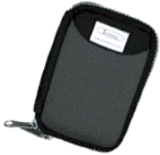

| Scribble case
After having dropped and broken the screen on both of our visors, we needed a case to protect them. After a bit of hunting around, and reading up, we decided that what we wanted was a neoprene case, as these seemed to offer protection without adding too much bulk. There aren't that many around targeted specifically for the visor, but fortunately the sizing difference between a visor and a Palm III is minimal and so most Palm III cases would do the job too. We found the Scribble website and had a look at the cases they had to offer. They do make them specifically for the visor, and so we ordered from them. At the time of ordering, they didn't have an option on the order form for visor, so we made a note in the comments to ask for a visor sized one. The case fits really well, and does add some protection to it. Richard was visiting a friend who had just broken the screen on his visor, and this was the opportunity we needed to test the case. The broken visor was put into the Scribble case and then dropped repeatedly to see if more screen cracks would appear. The results: the visor would survive a drop from about table height if it landed more-or-less flat (it was a flat landing that broke Richard's visor). However, dropping the visor so it landed on a corner caused more cracks. So... yes, it provides some protection. |
 Related Links:
|
|
Back to index page |